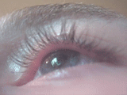

Muitos acham que fasciculação “fecha” ELA na vida — e na prova tratam como irrelevante. Os dois erros.
fasciculaçãoinespecífica ≠ irrelevante
Palavra-chave de prova
Miofasciculação / fasciculação é a grande palavra-chave da ELA na hora da prova.
Inespecífica na vida
Fasciculação não é específica de nada na clínica real. Ainda assim, é grande manifestação clínica da esclerose lateral amiotrófica na prática.
Inespecífica ≠ irrelevante na banca
Questões de prova adoram colocar fasciculação — porque a prática é assim; a palavra que não é específica na vida, na prova, puxa ELA.
Cuidado: inespecífica ≠ irrelevante na prova.

Fasciculação — contração involuntária de feixes sob a pele. O movimento é o achado; o contexto é o que decide.
By Leitz31337, via Wikimedia Commons · CC BY-SA 3.0 · fonte
O movimento, não o rótulo
O GIF mostra a fasciculação pela única forma que ela se ensina: em movimento. Sozinha, no contexto benigno da pálpebra, ela não é ELA — é o exemplo vivo de “inespecífica na vida”. O que a transforma em ímã de prova é o pacote em volta: 1º + 2º + progressão + mais nada.
Fasciculação: vida × prova
Diagrama vida × prova: o lado “prova” puxa ELA; o lado “vida” carrega o ícone “não patognomônica”.
Quiz — fixação
Sobre fasciculação na ELA, a leitura correta é:
Gabarito B. Dualidade vida × banca — o mesmo achado muda de peso conforme o contexto.
(A) superestima na vida. (C)/(D) apagam o ímã de prova e a clínica real. Cai em A porque confunde “muito cobrada” com “específica”.
“Inespecífica na vida” implica:
Gabarito B. Inespecífico ≠ inútil; no conjunto 1º+2º+progressão, pesa.
(A) falso — a banca ama. (C)/(D) empobrecem o exame. Cai em D porque a isca do “estresse” da P1 volta disfarçada.